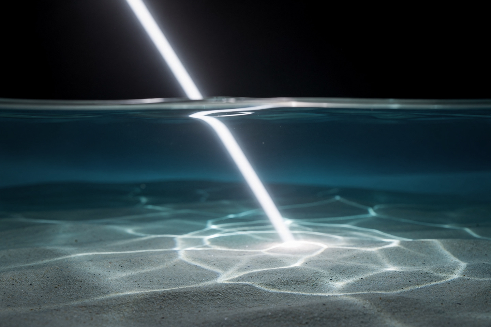
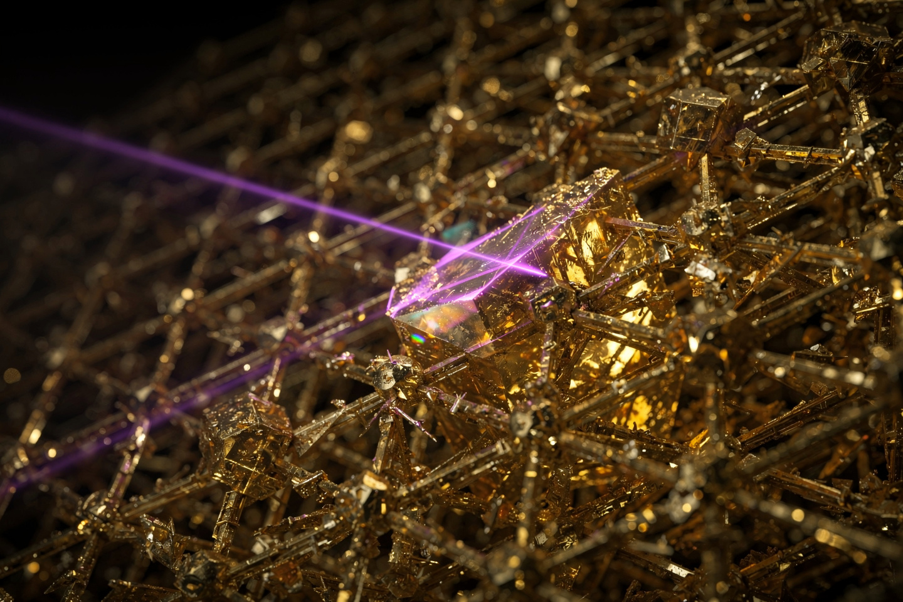

Рабочая заметка · оптика · часть XV
Снеллиус и Брэгг: как свет ломается и как рентген видит атомы
Один закон объясняет, почему ложка в стакане чая выглядит сломанной; второй — тем же самым математическим приёмом — позволил впервые увидеть форму молекулы ДНК.
В части X мы уже встречали задачу «спасателя на пляже» — намёк на то, как свет выбирает путь наименьшего времени. Здесь — полный разбор двух законов, управляющих отражением и преломлением волн: закон Снеллиуса (1621) для видимого света на границе сред и закон Брэгга (1913) для рентгеновских лучей на кристаллической решётке. Формально они выглядят по-разному, но оба — следствия одной и той же волновой интерференции, и вместе они охватывают весь путь от школьной физики линз до расшифровки структуры ДНК.


Два закона отражения-преломления
| Закон | Формула | Работает для |
|---|---|---|
| Снеллиуса (1621) | n₁sinθ₁ = n₂sinθ₂ | преломление луча на границе двух сред |
| Брэгга (1913) | nλ = 2d·sinθ | дифракция волны на периодической решётке (кристалле) |
Снеллиус описывает ОДНУ границу раздела (например, воздух-стекло). Брэгг описывает МНОЖЕСТВО параллельных плоскостей внутри кристалла — но математика в основе обоих законов родственна: волна взаимодействует с периодической или граничной структурой, и результат определяется геометрией углов.
Закон Снеллиуса: почему свет «ломается»
Формулировка. При переходе луча из одной прозрачной среды в другую:
Численный пример: луч света из воздуха (n₁ = 1) падает на воду (n₂ = 4/3 ≈ 1.33) под углом θ₁, где sinθ₁ = 2/3 (θ₁ ≈ 41.8°). Найдите угол преломления.
Луч приблизился к перпендикуляру (41.8° → 30°) — так всегда бывает при переходе в оптически более плотную среду (n растёт). Именно поэтому карандаш в стакане воды выглядит «переломленным»: свет от подводной части идёт к вашему глазу по излому, а мозг достраивает прямую линию.
Полное внутреннее отражение и оптоволокно
При переходе из плотной среды в менее плотную (n₁ > n₂, например, стекло → воздух) угол преломления ВСЕГДА больше угла падения. При достаточно большом угле падения преломлённый луч «прижимается» к самой границе (θ₂ = 90°) — а если падать ещё круче, преломление вообще прекращается: весь свет отражается обратно внутрь среды. Этот критический угол находится из условия sinθкрит = n₂/n₁.
Для стекла (n₁ = 1.5) на границе с воздухом (n₂ = 1): sinθкрит = 1/1.5 = 2/3, θкрит ≈ 41.8° — та же цифра, что и в §2, не совпадение: стекло и вода имеют похожие показатели преломления.
Оптоволоконный кабель — тонкая стеклянная нить, внутри которой свет заходит под углом больше критического и отражается от внутренней стенки СНОВА и СНОВА, тысячи раз, без единой потери энергии на каждом отражении (в отличие от зеркал, теряющих часть света при каждом отражении). Именно полное внутреннее отражение, а не какое-то специальное покрытие, удерживает сигнал внутри волокна на протяжении десятков и сотен километров.
Закон Брэгга: свет как линейка для атомов
Формулировка. Рентгеновские лучи, отражённые от параллельных атомных плоскостей кристалла, усиливают друг друга (конструктивная интерференция) только при определённых углах:
Атомные слои кристалла работают как полупрозрачные зеркала — часть волны отражается от верхнего слоя, часть проходит глубже и отражается от следующего. Если разница хода между этими двумя отражёнными волнами (геометрически равная 2d·sinθ) кратна длине волны, волны складываются «в фазе» и дают яркий сигнал; если нет — гасят друг друга.
Численный пример: рентгеновские лучи с длиной волны λ = 0.15 нм направлены на кристалл с межплоскостным расстоянием d = 0.15 нм. Найдите угол первого (n = 1) яркого отражения.
Сквозной пример: как увидели двойную спираль ДНК
В 1952 году Розалинд Франклин направила рентгеновские лучи на кристаллизованные волокна ДНК и получила знаменитый «снимок 51» — крестообразный узор из тёмных пятен. Каждое пятно — это яркая точка, где для конкретного угла и конкретного межплоскостного расстояния выполнилось условие Брэгга (§4). Характерная Х-образная форма узора напрямую указывала на СПИРАЛЬНУЮ (не прямую, не случайную) структуру молекулы — Джеймс Уотсон, увидев этот снимок, за несколько недель построил правильную модель двойной спирали.
Закон Брэгга (Нобелевская премия по физике 1915 года — отцу и сыну Брэггам, самая молодая пара нобелевских лауреатов в истории: Уильяму Лоренсу было всего 25 лет) с тех пор напрямую или косвенно стоит за расшифровкой структуры инсулина, гемоглобина, рибосомы и тысяч других биомолекул — рентгеноструктурный анализ остаётся одним из главных методов структурной биологии и сегодня, спустя больше века.
Куда это ведёт: снова принцип Ферма
Закон Снеллиуса — не отдельный постулат оптики, а прямое следствие принципа Ферма (часть X, §5): свет выбирает путь наименьшего ВРЕМЕНИ, и минимизация этого времени на границе двух сред с разной скоростью света математически даёт ровно n₁sinθ₁ = n₂sinθ₂. Задача «спасателя на пляже», разобранная в части X, была не метафорой для разминки, а буквально той же самой математикой.
Закон Брэгга, в свою очередь, можно вывести из более общего волнового принципа интерференции — условия, при котором складывающиеся волны усиливают, а не гасят друг друга. Обе картины (лучевая оптика Снеллиуса и волновая интерференция Брэгга) сходятся в единую электромагнитную теорию света, описываемую уравнениями Максвелла (часть IV).
На сайте это отдельные законы, если хочется пройти глубже:
Эксперимент дома
Опустите карандаш (или соломинку) наполовину в прозрачный стакан с водой под углом (не строго вертикально) и посмотрите сбоку, чуть сверху.
Что заметить карандаш выглядит «переломленным» точно на границе воды и воздуха — свет от подводной части карандаша преломляется по закону Снеллиуса (§2), меняя направление на границе, и глаз, достраивая прямую линию по последнему направлению луча, «видит» излом там, где реального излома в карандаше нет.
В тёмной комнате проделайте небольшое отверстие сбоку в пластиковой бутылке с водой (ближе ко дну), дайте воде вытекать тонкой струйкой в раковину, и направьте лазерную указку через бутылку так, чтобы луч входил в струю ИЗНУТРИ, у самого отверстия.
Что заметить луч лазера «плывёт» вместе с изогнутой водяной струёй, а не летит по прямой — это полное внутреннее отражение (§3) в чистом виде: вода изнутри работает как гибкий световод, ровно тот же принцип, что и в оптоволоконном кабеле, только видимый невооружённым глазом.
Задачи для проверки
Сначала подумайте сами, затем откройте решение. Решение везде идёт по схеме: Дано → Закон → Решение → Ответ.
1. Свет переходит из воды (n = 4/3) в воздух (n = 1) под углом падения, где sinθ₁ = 0.6. Найдите sinθ₂.
Дано n₁ = 4/3, n₂ = 1, sinθ₁ = 0.6.
Закон закон Снеллиуса (§2): n₁sinθ₁ = n₂sinθ₂.
Решение sinθ₂ = (4/3)·0.6/1 = 0.8.
Ответ sinθ₂ = 0.8 (θ₂ ≈ 53.1°) — угол вырос, так как свет выходит в МЕНЕЕ плотную среду.
2. Найдите критический угол полного внутреннего отражения для алмаза (n = 2.4) на границе с воздухом (n = 1).
Дано n₁ = 2.4, n₂ = 1.
Закон критический угол (§3): sinθкрит = n₂/n₁.
Решение sinθкрит = 1/2.4 ≈ 0.417 ⇒ θкрит ≈ 24.6°.
Ответ ≈24.6° — очень маленький угол (у алмаза огромный n), поэтому огранённый алмаз «играет» так ярко: свет внутри почти всегда отражается полностью, а не выходит наружу.
3. Рентгеновские лучи с длиной волны 0.2 нм дают первый (n=1) яркий отблеск от кристалла под углом скольжения 30°. Найдите межплоскостное расстояние d.
Дано λ = 0.2 нм, θ = 30°, n = 1.
Закон закон Брэгга (§4): nλ = 2d·sinθ.
Решение d = nλ/(2sinθ) = 0.2/(2·0.5) = 0.2 нм.
Ответ 0.2 нм — типичный масштаб межатомных расстояний в кристаллах.
4. Почему полное внутреннее отражение возможно только при переходе из БОЛЕЕ плотной среды в МЕНЕЕ плотную, а не наоборот?
Закон §3 — вывод условия критического угла.
Решение sinθкрит = n₂/n₁ должно быть ≤ 1 (синус не может быть больше 1) — это возможно только когда n₂ ≤ n₁, то есть при переходе в менее плотную среду. При переходе в БОЛЕЕ плотную среду (n₂ > n₁) отношение n₂/n₁ больше 1, у уравнения sinθкрит нет решения — преломление происходит при ЛЮБОМ угле падения, критического угла просто не существует.
Ответ математическое ограничение синуса (≤1) делает эффект возможным только в одном направлении перехода.
5. Чем принципиально отличается угол θ в законе Снеллиуса от угла θ в законе Брэгга (помимо того, что один для преломления, а другой для дифракции)?
Закон сравнение определений (§2 и §4).
Решение в законе Снеллиуса угол θ отсчитывается от ПЕРПЕНДИКУЛЯРА (нормали) к границе раздела — стандартное соглашение геометрической оптики. В законе Брэгга угол θ отсчитывается от САМОЙ ПЛОСКОСТИ (угол скольжения) — историческое соглашение кристаллографии. Это чисто соглашение об отсчёте, не физическое различие, но частая причина ошибок при переключении между этими двумя законами.
Ответ разные точки отсчёта угла — от нормали (Снеллиус) против от плоскости (Брэгг).
Опечатка, неверная формула, число не сходится, коряво объяснено — напишите нам: feedback@bridge42worlds.org. Каждое сообщение реально читается, разбирается и по нему вносится правка — это не «в стол».